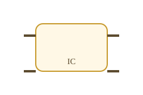
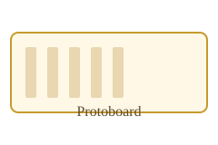

Concepto central
Arquitectura y Organización
La misma familia de procesadores puede tener idéntica arquitectura con organizaciones completamente diferentes.
Diseño lógico
Atributos del sistema visibles para el programador de bajo nivel. Define el contrato entre el software y el hardware.
- Conjunto de instrucciones (ISA)
- Número de bits para representación de datos
- Modos y técnicas de direccionamiento de memoria
- Registros visibles por el programador
El Intel 8086 y el Intel 8088 comparten la misma arquitectura IA-16, pero tienen organizaciones internas distintas (bus de datos 16 vs 8 bits).
Implementación física
Cómo se conectan y controlan los componentes a nivel de circuito. Invisible para el programador, determinante para el rendimiento.
- Señales de control de buses internos
- Interfaces de memoria y caché
- Tecnología de los circuitos (CMOS, TTL)
- Diseño del datapath y la ALU
Dos CPUs con el mismo ISA x86 pueden diferir radicalmente en número de etapas de pipeline, tamaño de caché y frecuencia de reloj.
¿Cómo se relacionan?
Define el qué: el conjunto de capacidades y el contrato con el software.
Define el cómo: los circuitos físicos que ejecutan esas capacidades.
Un fabricante puede lanzar múltiples generaciones de procesadores con la misma arquitectura (compatibilidad de software) mejorando la organización interna en cada iteración para aumentar el rendimiento.
Segundo concepto
Microprocesador vs Microcontrolador
Misma idea de "CPU en un chip", distinto nivel de integración y distinto escenario de uso.

Microprocesador
Circuito integrado que contiene únicamente la CPU. Para funcionar necesita componentes externos en la placa base.
- Requiere RAM y ROM externas
- Necesita controladores de periféricos separados
- Alta capacidad de cómputo, arquitecturas complejas
- Ej: familia Intel x86, AMD Ryzen
Pensá en la PC de escritorio: el microprocesador es solo uno de los muchos chips de la placa madre.

Microcontrolador
Sistema computacional completo integrado en un solo chip. CPU, memoria y periféricos conviven en el mismo die de silicio.
- CPU + RAM + Flash + puertos E/S integrados
- Bajo consumo, tamaño reducido, bajo costo
- Orientado a control de sistemas embebidos
- Ej: ATmega328P (Arduino Uno)
El microcontrolador del Arduino es el chip completo: no necesita RAM externa ni controladora de periféricos.
Comparativa directa
| Característica | Microprocesador (μP) | Microcontrolador (μC) |
|---|---|---|
| Integración | Solo CPU | CPU + RAM + Flash + E/S |
| Memoria | Externa (placa base) | Integrada en el chip |
| Potencia de cómputo | Alta | Media-baja |
| Consumo energético | Alto | Muy bajo |
| Aplicación típica | PC, servidores, laptops | Sistemas embebidos, IoT, robótica |
| Ejemplo | Intel Core i7, AMD Ryzen | ATmega328P, ESP32, STM32 |